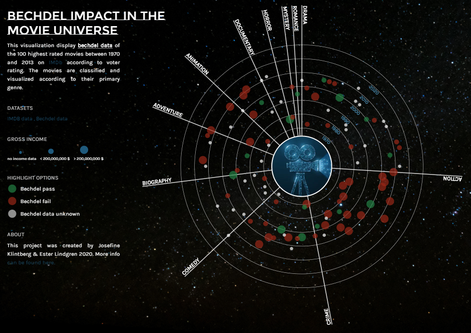
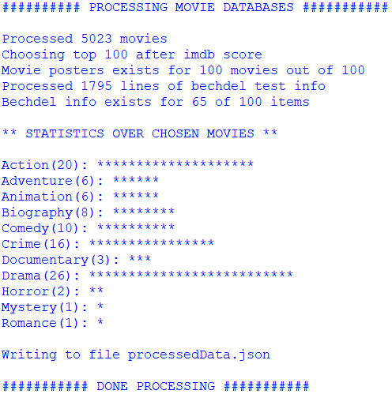
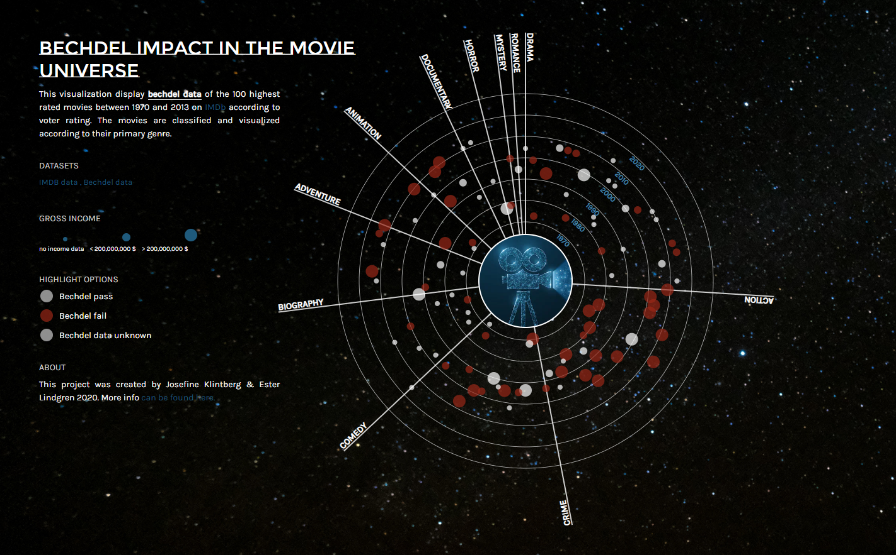
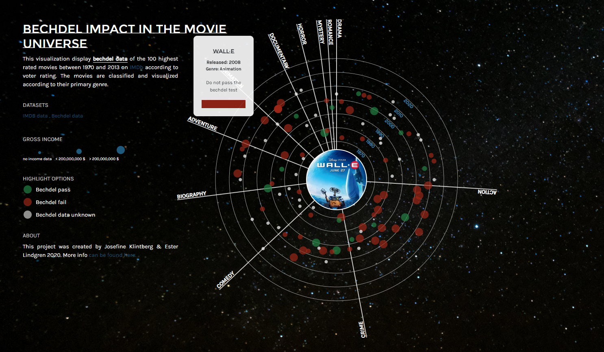
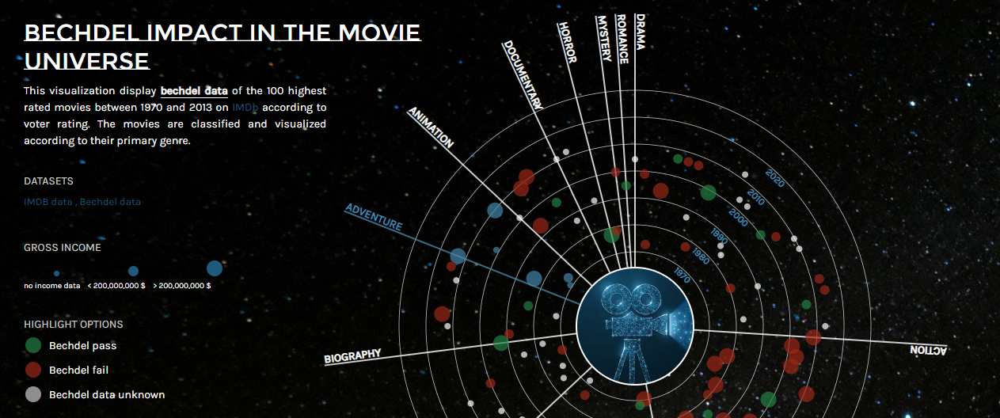

Summary
This project was performed with purpose of creating an interactive solution that lets users gain insight in the Bechdel test and investigating connections between genres and female representation within the film industry. The project was performed as part of the course 'Information Visualization' (TNM048) at Linköping University during the winter of 2020 and was awarded with 'The Orange Cube' 2021, that is awarded to the best creative project created during the past year at the program MSc in Media Technology at Linköping University.
The data for the project is consisting of two datasets, both acquired through Kaggle. One is a set of the 5000 most popular movies from the website IMDb between 1970 and 2013, and the other one is a dataset containing Bechdel data for around 2000 movies. The datasets are concatenated and analysed through a Python script that outputs a json-file.
The visualization is implemented using Javascript d3 library and is based on a radial sequence approach where each movie is represented as a circle and displayed with a distance from the center that corresponds to the production year of the movie. The gross income for the movie is mapped through the radius of the circle and the user can filter movies according to Bechdel data as well as display more detailed information of individual movies by hovering.
About the visualization
With an increased access and encountering with digital representation of characters in games, movies and commercials, the importance of a diverse and including representation of gender is becoming more and more important. In order of adding a direct measure and minimum criteria for a better female representation in fiction, the Bechdel test canbeused. The test originated from the comic strip ”Dykes to Watch Out For” by Alison Bechdel in 1986 and consist of three criterias; there must be at least two, named, female characters, they must talk to each other and they must talk about something that is not a man.
With main focus on the movie industry and how a gender asymmetric appearance and the lack of equal role models is forming the way we think and form our minds around gender, this project was implemented with the goal of investigating if there is certain movie genres that suffers more from gender biases than others.
Implementation
Two data sources have been used for this project: the Bechdel Dataset and a subset of the Internet Movie Database (IMDb). Both of the datasets were acquired through Kaggle. In order to implement the visualization, the two datasets were processed and combined into one with focus on dimensional reduction. A Python script was implemented that processed the data into a resulting json-file and it was also used to output statistics of the data being processed in the console, as a way to conclude that a good variety of data had been chosen. The statistics for the data used in the visualization can be seen below.
The implementation of the visualization graph was performed using the Javascript library \textit{d3}, version 3, and displayed through an HTML-file and styled by CSS. The usage of circles to represent the years and the base for the Javascript implementation came from the Starburst approach by Srivastava. The main approach for designing and implementing the visualization was performed with regards to the 'visualization seeking mantra' proposed by Shneiderman in 1996; overview first, zoom and filter, then details on demand.
 Further more, user-centered evaluations was performed with the aim of concluding weather the visualization had been implemented in a successful way that both allows for interaction as well as investigations of correlations between genres and female representation in movies. The evaluation consisted of six questions and was a mix of qualitative and quantitative measures that further was resulting in a evaluation report and connected back to the implementation step in order to fix potential issues.
The user-centered evaluation confirmed that the visualization was a good application to encourage interaction since all the participants managed to use and understand both the filtering and the mapping of data within a short amount of time. However, there was one issue regarding the mapping that was highlighted during the survey and that was the perception of which genre the movies corresponded to. In order to further emphasize the mapping of data for the genres, an additional filtering function was implemented that causes all movies corresponding to the current genre to be highlighted when the user hovers over the name of that genre, or the line dividing this genre from the others.
